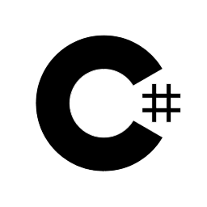

Hayden Stimpson
I’m a Computer Science graduate that has just completed a one year Software Development internship at Integration Technologies Limited. I’m experienced in a range of programming languages, and have an interest in computer hardware and software.
~~Github Link~~
~~LinkedIn Link~~
Skills
|
Python |
Java |
C#  |
SQL |
|
Git |
Mercurial |
Ruby |
HTML |
|
CSS |
Javascript |
Wordpress |
.NET |
Education
Feb 2019 - June 2022 |
Massey University - Bachelor of Science Tennent Drive - Palmerston North
|
Experience
Sep 2022 - Sep 2023 |
Integration Technologies Limited - Software Developer Intern 136b The Square, Palmerston North
|
Jan 2019 - Sep 2022 |
Gropak - Packer/Order Picker 21 Dampneys Road, Palmerston North
|
Volunteer Experience
Feb 2017 - Nov 2018 |
Longburn Adventist College - Audio Visual Manager 100 Walkers Road, Palmerston North
|
Feb 2013 - Dec 2016 |
Longburn Adventist College - Audio Visual Technician 100 Walkers Road, Palmerston North
|